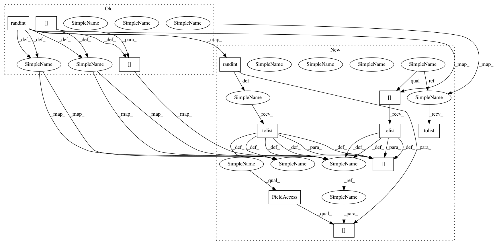

c2a9e8317be6120c991082c319544a2076b87624,onmt/transforms/bart.py,BARTNoising,whole_word_mask,#BARTNoising#,117
Before Change
to_keep[indices] = 0
else:
// keep index, but replace it with [MASK]
for i in indices:
tokens[i] = self.mask_tok
random_toks = torch.randint(
0, len(self.vocab), size=(mask_random.sum(),))
for i, rand_tok in zip(indices[mask_random], random_toks):
tokens[i] = rand_tok
// assert tokens_length - 1 not in indices
After Change
while indices.size(0) > 0:
// to cover whole token
uncompleted = is_word_start[indices + 1] == 0
indices = indices[uncompleted] + 1
mask_random = mask_random[uncompleted]
if self.replace_length != -1:
// delete token
to_keep[indices] = 0
else:
// keep index, but replace it with [MASK]
for i in indices.tolist():
tokens[i] = self.mask_tok
random_tok_ids = torch.randint(
0, len(self.vocab), size=(mask_random.sum(),)).tolist()
for i, rid in zip(
indices[mask_random].tolist(), random_tok_ids):
tokens[i] = self.vocab[rid]
// assert tokens_length - 1 not in indices
tokens = [tok for tok, keep in zip(tokens, to_keep.tolist())
In pattern: SUPERPATTERN
Frequency: 3
Non-data size: 11
Instances
Project Name: OpenNMT/OpenNMT-py
Commit Name: c2a9e8317be6120c991082c319544a2076b87624
Time: 2020-10-22
Author: linxiao.zeng@gmail.com
File Name: onmt/transforms/bart.py
Class Name: BARTNoising
Method Name: whole_word_mask
Project Name: OpenNMT/OpenNMT-py
Commit Name: c2a9e8317be6120c991082c319544a2076b87624
Time: 2020-10-22
Author: linxiao.zeng@gmail.com
File Name: onmt/transforms/bart.py
Class Name: BARTNoising
Method Name: whole_word_mask